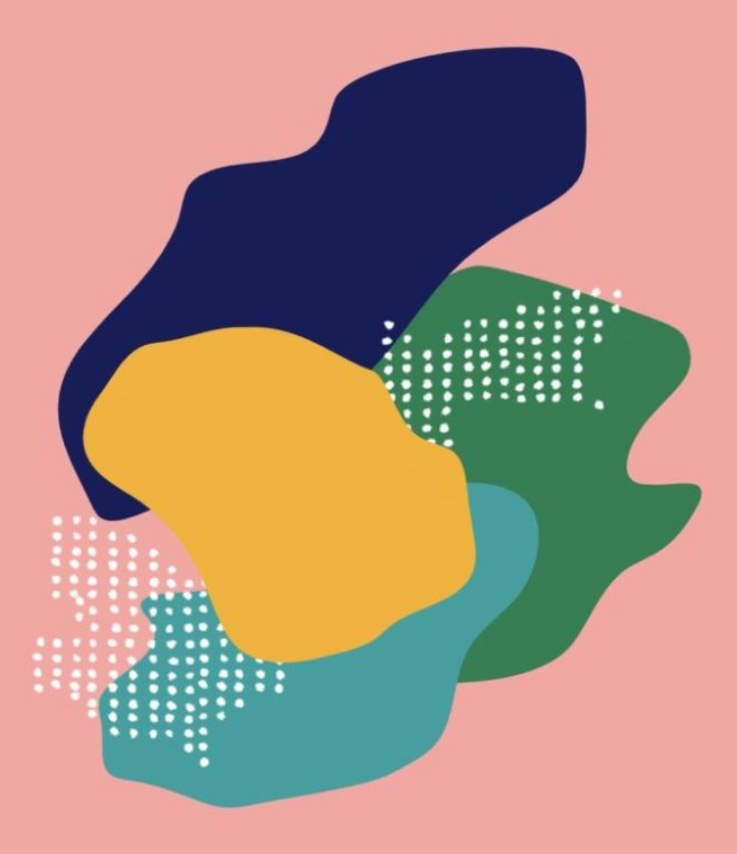

I'm an aspiring web developer. Scroll down to learn a bit more about me.
Thanks for visiting my portfolio page. Hopefully the below gives you a bit of background about who I am and what I'm about. Questions? Please reach out!
I currently call Portland, Oregon home and love living in the Pacific Northwest! Cooking is one of my favorite hobbies and these days I've been exploring Indian cuisine. I love fitness and specifically working out with friends. Sometimes the best way to catch up with someone is by taking a long hike and finishing up an adventure with a delicious breakfast.
My brain likes gathering interesting facts - both important and seemingly useless ones. You've got a weird and random fact - share it with me! Looking to explore the world of software development and start a new career in 2021. There are endless possibilities with tech. If you can dream it - you can create it!
The list below includes links to my GitHub repositories. Please check out some of the projects I'm most proud of!
Interested in collaborating? Contact me and let's chat about your project!